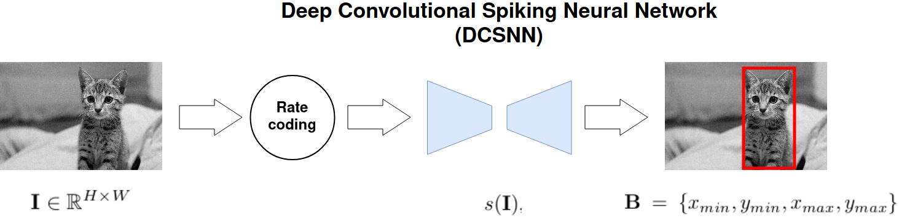

SNN-based Object Localization: discussions
Sami BARCHID José MENNESSON Chaabane DJÉRABA

Existing Method
Formulation
Formulation
Formulation
Formulation
Formulation
For short
- Supervised online learning w/ DECOLLE
- Preliminary experiments on OXFORD-IIIT-Pet dataset: 63.2 % mIoU

Observations
Rare small objects are poorly localized
- Reason 1: dataset imbalance problem
- Reason 2: output conversion strategy
Suggestions
Network Architecture
- Try deeper architecture
- FC layer at the end
- ...
More Datasets
Adapt datasets from Saliency Object Detection
- MSRA-1000
- MSRA-B
- ECSSD
Preprocessing
- On-Off filters or DoG filters before neural coding
Neural Coding
- Rate coding
- Time-To-First Spike (TTFS)
- Phase coding
- "Saccade-based" coding
- Synchrony coding
Illustration
Rate Coding
TTFS
Phase Coding
Saccade-based coding
Synchrony Coding
Energy efficiency study
- Spike-Flownet's study (based on spike activity, etc)
- Or simpler: Synaptic Operations & Spike Activity
- Impact of quadratic spike penalization loss
Empirical study on features
- Using Spiking Activation Maps (SAM)
- Neural coding comparison
Output Conversion Strategy
- Identify the best method (for each neural coding) to obtain an optimal prediction among all timesteps
- Comparison of inference latency
Robustness
Apply additive gaussian noise and check the model's performance
- Comparison on neural codings
- ...